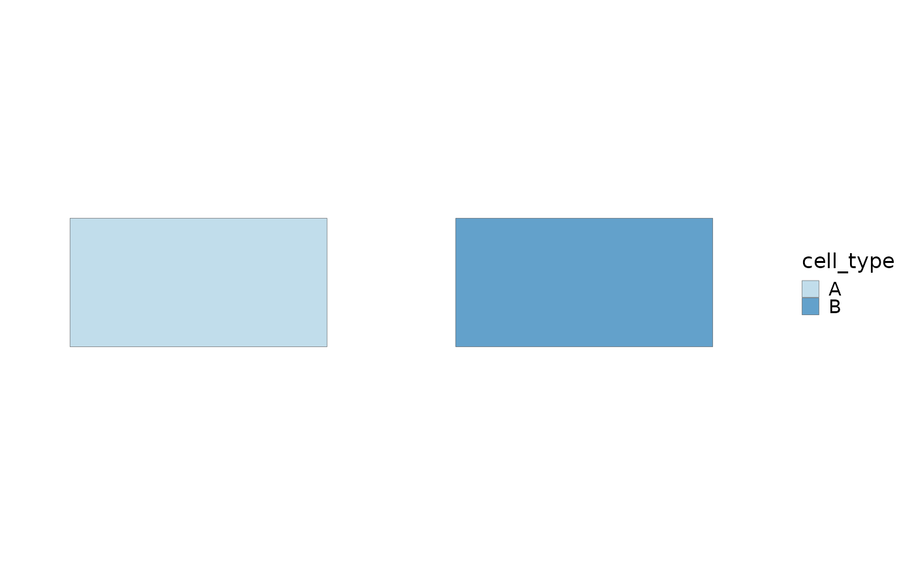

Plot cell segmentation polygons from a boundary table or Seurat spatial image.
Usage
SpatialCellPlot(
object = NULL,
res = NULL,
boundaries = NULL,
cells = NULL,
image = NULL,
crop = TRUE,
group.by = NULL,
features = NULL,
palette = NULL,
palcolor = NULL,
fill.alpha = 0.7,
boundary.color = "grey30",
boundary.linewidth = 0.1,
theme_use = "theme_spatial",
theme_args = list(),
assay = NULL,
layer = "data",
...,
combine = TRUE,
nrow = NULL,
ncol = NULL,
byrow = TRUE,
legend.position = "right",
legend.direction = "vertical",
legend.title = NULL
)Arguments
- object
Optional `Seurat` object used to extract boundaries or values.
- res
Optional result list containing a `boundaries` data frame.
- boundaries
Optional boundary data frame.
- cells
Optional cell or spot identifiers to retain.
- image
Seurat image name. Multi-image objects require an explicit name.
- crop
Whether to crop the plot to the selected boundaries.
- group.by
Boundary column or Seurat metadata column used for filling.
- features
Features to display. Multiple features return a patchwork.
- palette, palcolor
Palette name or explicit colors. The default uses `"Paired"` for categories and sequential `"YlGnBu"` for numeric values. Named colors are matched to category names.
- fill.alpha
Polygon fill opacity.
- boundary.color, boundary.linewidth
Boundary appearance.
- theme_use, theme_args
Theme used to style the plot. Default is `"theme_spatial"`.
- assay
Assay used when `features` are fetched from `object`.
- layer
Layer used when `features` are fetched from `object`.
- ...
Additional arguments passed to `ggplot2::geom_polygon()`.
- combine
Return combined panels, or a named list when `FALSE`.
- nrow, ncol, byrow
Layout controls for multiple feature panels.
- legend.position, legend.direction, legend.title
Legend controls.
Details
Boundary tables require `cell_id`, `x`, and `y` columns in polygon vertex order. Seurat images must contain segmentation boundaries.
Examples
Restored example output generated on 2026-10-10 from SCOP 151e7134c. These historical examples have not been revalidated against the current release. Current usage and arguments are documented above.
# Constructed polygons demonstrate plotting, not a segmentation algorithm.
boundaries <- data.frame(
cell_id = rep(c("cell1", "cell2"), each = 4),
x = c(0, 2, 2, 0, 3, 5, 5, 3), y = rep(c(0, 0, 1, 1), 2),
cell_type = rep(c("A", "B"), each = 4)
)
SpatialCellPlot(boundaries = boundaries, group.by = "cell_type")
